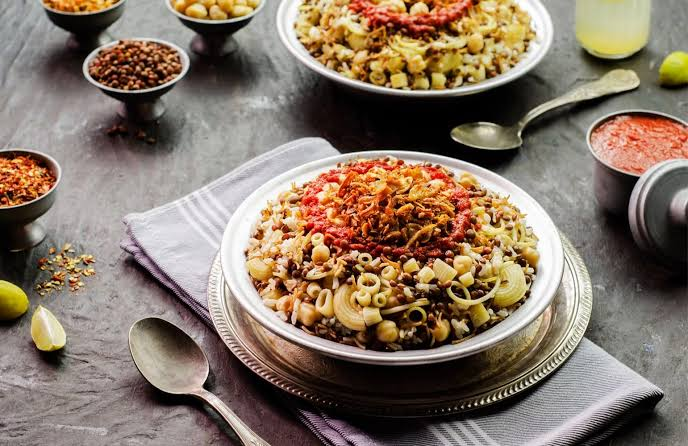

Koshary Recipe

Description
AAAAHHHHH My Heart. Also One of the MOST BEAUTIFUL Meals in THE WORLD not in the middle east only
Ingredients
- Rice
- Pasta
- Brown Lentils
- Tomato Sauce
- Crispy Onion
- Hummus
Steps
- Soak the chickpeas for several hours, then boil them. Boil the brown lentils with a little cumin and salt
until tender.
- Mix two types of pasta (short-cut and spaghetti), boil them in salted water, then drain and toss with a
little oil.
- Slice the onion thinly, sprinkle with a spoonful of cornstarch and a little flour, and fry in hot, deep oil
until golden and crispy.
- Sauté the vermicelli in the onion-infused oil until golden, then add the washed rice, salt, and water, and
let it cook over low heat.
- Sauté the minced garlic in the onion-infused oil; add the tomato juice, vinegar, cumin, salt, and a pinch of
sugar, then let the mixture heat up and thicken.
- Mix minced garlic with lemon juice, white vinegar, cumin, salt, and a little water, and heat briefly on the
stove.
- Layer the rice, followed by the pasta and then the lentils; garnish the top with chickpeas and crispy
onions, and serve with the sauce and *duqqa* on the side.
Home